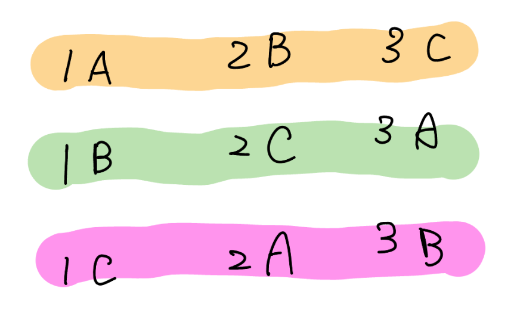
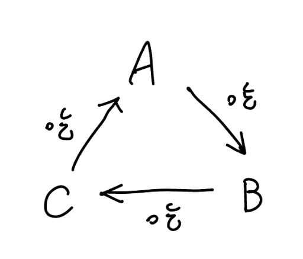

並查集 DSU
介紹¶
- 持久化並查集
- 帶權並查集 (CF imposter)
- 可撤銷並查集 (2023 成大賽 p4)
- 加點技巧 (海牛 class 11 hm)
連結¶
- 二分圖
- 啟發式合併
- 海牛 class 11
- DSU 啟發式合併複雜度證明 (知乎)
- 啟發式合併複雜度 (oi wiki)
- 持久化線段樹
一般的並查集¶
模板 CF EDU A. Disjoint Sets Union
維護一個 DSU，支持：
-
\(\text{union}(u,v):\) 合併 \(u\) 和 \(v\) 所在的集合
-
\(\text{get}(u,v):\) 查詢 \(u\) 和 \(v\) 是否在同一個集合
\(n,m\le 10^5\)
模板¶
只做啟發式合併
路徑壓縮 + 啟發式合併
複雜度¶
啟發式合併¶
並查集中節點數為 \(n\) 的樹，高度至多為 \(\lfloor \log n \rfloor\)
說明
因為合併的時候是啟發式合併，子樹大小比較小的放在比較大的下面。這樣合併出來的樹，每次往上走一層，子樹大小都會變至少兩倍，所以高度最多 \(O(\log n)\)
如果上面看不懂的話，假設目前的子樹的根為 \(u\)，要合併進來的子樹的根為 \(v\)。我們分兩種 case 討論。假設 \(u,v\) 的子樹都符合 「高度至多為 \(\log n\)」這個條件
-
\(size_u\ge size_v\)
-
\(size_u< size_v\)
對於第一種 case，因為 \(size_u\ge size_v\)，所以 \(v\) 會接在 \(u\) 上。顯然 \(v\) 的高度一定 \(\le u\) 的高度，所以 \(v\) 接在 \(u\) 上並不會增加 \(u\) 的子樹的高度
對於第二種 case，因為 \(size_u< size_v\)，所以 \(u\) 會接在 \(v\) 上。顯然 \(v\) 的高度一定 \(\ge u\) 的高度，所以 \(u\) 接在 \(v\) 上對於原本 \(u\) 的子樹來說 \(size\) 變成了兩倍之多，而 \(u\) 上面多了一層
所以每次往上走一層，\(size\) 都至少變兩倍，因為點數只有 \(n\) 個，所以最多只會有 \(\log n\) 層，也就是高度至多為 \(\log n\)
嚴謹一點的證明
【引理】：在並查集中高度為 \(k\) 的樹，節點數至少為 \(2^k\)。
使用歸納法證明這個引理
basecase : \(k = 0\) 時，成立
假設 \(k \le L - 1\) 時成立。當 \(k = L\) 時，存在一次使得樹從高度 \(L - 1\) 變成高度 \(L\) 的操作。在這次操作前，兩棵樹的高度必然為 \(L - 1\)，因此它們的節點數總數至少為 \(2\times 2^{L-1}=2^L\)。
設一個並查集內的樹的節點有 \(n\) 個，高度是 \(h\)。根據引理，\(n \ge 2^h\)，則 \(\log n \ge h\)。故並查集中節點數為 \(n\) 的樹，高度至多為 \(\lfloor \log n \rfloor\)
依照上面的性質，find(x) 的複雜度是 \(O(\log n)\)。merge(u, v) 的複雜度是兩個 find 也是 \(O(\log n)\)，所以整體的複雜度是 \(O(\log n)\)
路徑壓縮¶
若將「路徑壓縮」和「啟發式合併」都用上的話複雜度是 \(\Theta(\alpha (n))\)1
若不使用「啟發式合併」，平均複雜度依然是 \(O(\alpha (n))\)，但 worst case \(O(\log n)\)
rollback DSU¶
模板¶
模板 CF EDU DSU A. DSU with rollback
有 \(n\) 個點與 \(m\) 個以下操作 :
-
\(\text{union}(u,v):\) 將 \(u,v\) 所在的連通塊合併成同一個連通塊
-
\(\text{persist}:\) 新增一個 checkpoint
-
\(\text{rollback:}\) 回到上一個還沒被 rollback 的 checkpoint
\(n,m\le 2\times 10^5\)
模板
複雜度¶
不能使用路徑壓縮（但還是可以啟發式合併），故複雜度 \(O(\log n)\)
帶權並查集¶
CF 1594 D. The Number of Imposters
給定 \(n\) 個點，每個點有一個未知的 \(w_i\in \{0,1\}\)，再給 \(m\) 個關係
- \((x,y,0):\) \(w_x = w_y\)
- \((x,y,1):\) \(w_x \neq w_y\)
判斷最多有多少個點的 \(w_i=1\)
思路 1
考慮二分圖染色法判斷，兩個點之間有邊代表兩點的顏色不同
- \((x,y,0):\) 在 \(x,y\) 之間建一條邊
- \((x,y,1):\) 建立一個 \(z\) 點分別連接 \(x,y\)
這樣下去跑二分圖染色法即可，每個連通塊答案取兩種顏色的 \(\max\)，再加起來 注意在跑二分圖染色法時不能將多餘的 \(z\) 點算進去
code(from acwing)
思路 2
考慮帶權並查集
對於每個並查集維護並查集內每個點與 root 的距離是 \(0\) 或是 \(1\)
最後每個並查集 \(\max(\)與 root 的距離是 \(0\) 的數量 \(,\) 與 root 的距離是 \(1\) 的數量\()\)
code
持久化並查集¶
先備知識 : 持久化資料結構
洛谷 P3402 可持久化并查集
給定 \(n\) 個集合，第 \(i\) 個集合內初始狀態下只有一個數，為 \(i\)。
有 \(m\) 次操作。操作分為 \(3\) 種：
-
\(1\space a\space b:\) 合併 \(a,b\) 所在集合
-
\(2\space k:\) 回到第 \(k\) 次操作之後的狀態
-
\(3 \space a\space b:\) 詢問 \(a,b\) 是否屬於同一集合
註 : 執行三種操作中的任意一種都記為一次操作
\(n\le 10^5,m\le 2\times 10^5\)
實作細節
size 要維護好，不然可能會吃 TLE（啟發式合併壞掉）
記得每次操作後要記得 clone，不然會吃 RE（戳到 roots[] 陣列外面）
不能在 Node 裡面存 l, r，避免 MLE 
code
1 2 3 4 5 6 7 8 9 10 11 12 13 14 15 16 17 18 19 20 21 22 23 24 25 26 27 28 29 30 31 32 33 34 35 36 37 38 39 40 41 42 43 44 45 46 47 48 49 50 51 52 53 54 55 56 57 58 59 60 61 62 63 64 65 66 67 68 69 70 71 72 73 74 75 76 77 78 79 80 81 82 83 84 85 86 87 88 89 90 91 92 93 94 95 96 97 98 99 100 101 102 103 104 105 106 107 108 109 110 111 112 113 114 115 116 117 118 119 120 121 122 123 124 125 126 127 128 129 130 131 132 133 134 135 136 137 138 139 140 141 142 143 144 145 146 147 148 149 150 151 152 153 154 155 156 157 158 159 160 161 162 163 164 165 166 167 168 169 | |
想法上是利用 DSU 的 par, size 其實是陣列，將這兩個陣列都套上持久化線段樹的模板後，即可使用，功能是單點查詢（par, size），單點加值（size），單點改值（par）
模板
1 2 3 4 5 6 7 8 9 10 11 12 13 14 15 16 17 18 19 20 21 22 23 24 25 26 27 28 29 30 31 32 33 34 35 36 37 38 39 40 41 42 43 44 45 46 47 48 49 50 51 52 53 54 55 56 57 58 59 60 61 62 63 64 65 66 67 68 69 70 71 72 73 74 75 76 77 78 79 80 81 82 83 84 85 86 87 88 89 90 91 92 93 94 95 96 97 98 99 100 101 102 103 104 105 106 107 108 109 110 111 112 113 114 115 116 117 118 119 120 121 122 123 124 125 126 127 128 129 130 131 132 | |
複雜度¶
跟 rollback DSU 一樣，不做路徑壓縮，做啟發式合併
因為 find(x) 的時候至多需要做 \(\log n\) 次單點查詢，故 find(x) 複雜度 \(O(\log^2 n)\)
用途¶
並查集做二分圖
有 \(n\) 個點，給 \(m\) 個 \((u,v)\) 代表 \(u,v\) 不同組，問有沒有辦法將這些點成兩組
\(n,m\le 10^5\)
code
並查集判環
給一張圖，問是否存在環
思路
若出現一條邊的鄰接點在同一個集合裡，則可證明有環存在
洛谷 P2024 [NOI2001] 食物链
有三類動物 \(A,B,C\)，這三類動物的⾷物鏈構成如下：\(A\) 吃 \(B\)， \(B\) 吃 \(C\)，\(C\) 吃 \(A\)。
現有 \(N\) 個動物，編號 \(1,2,...,N\)。每個動物都是 \(A,B,C\) 中的⼀種，但並不知道是哪⼀種。依序給 \(K\) 條屬 於以下兩種的敘述：
-
\(1\space X\space Y\)，表⽰ \(X\) 和 \(Y\) 是同類
-
\(2\space X\space Y\)，表⽰ \(X\) 吃 \(Y\)
然⽽，並不是每條描述都是正確的，有些是真話，有些是假話。 如果當前的話與前⾯的某些真話衝突，就是假話請判斷哪些話是真話，哪些話是假話。
思路
-
我們可以⽤並查集維護資訊間的因果關係
-
⼀個集合裡⾯的資訊代表「這些資訊必須同時發⽣」
-
⽐如說，假設 \((x,y)\) 符合第⼀種資訊
-
那就代表：如果 \(x\) 是 \(A\) 類，那 \(y\) 必須是 \(A\) 類，反之亦然 （\(B,C\) 類同樣可以套⽤）
-
翻譯⼀下：如果 \(x_A\) 發⽣的話，那 \(y_A\) 也⼀定要發⽣（\(B,C\) 類同樣可以套⽤）
-
\(\text{merge}(x_A, y_A),\text{merge}(x_B, y_B), \text{merge}(x_C,y_C)\)
-
⽐如說，假設 \((x, y)\) 符合第⼆種資訊
-
那就代表：
- 如果 \(x\) 是 \(A\) 類，那 \(y\) 必須是 \(B\) 類，反之亦然
- 如果 \(x\) 是 \(B\) 類，那 \(y\) 必須是 \(C\) 類，反之亦然
-
如果 \(x\) 是 \(C\) 類，那 \(y\) 必須是 \(A\) 類，反之亦然
-
\(\text{merge}(x_A, y_B),\text{merge}(x_B, y_C), \text{merge}(x_C,y_A)\)
- 矛盾的情況呢 ?
- 假如 \((x, y)\) 符合第⼆種資訊
- 如果 \(\text{find}(x_A)=\text{find}(y_C)\) 或 \(\text{find}(x_A)=\text{find}(y_A)\) 則矛盾
他們每個 col 將會以 \(A \rightarrow B \rightarrow C\) 的順序旋轉 所以當你知道其中一個關係的時候其實就能推得其餘的關係
例如今天 \(1\) 吃 \(2\)，\(2\) 吃 \(3\) 關西如下圖


因為 \(1\) 吃 \(2\)，那麼以圖(一)來看就是 \(1\) 是 \(A\) 時，\(2\) 就是 \(B\)
可以看做 \(1,2\) 分別以 \(A,B\) 為起點，繞著關係圖轉一圈
-
當 \(1\) 在 \(A\) 時，\(2\) 在 \(B\)
-
當 \(1\) 在 \(B\) 時，\(2\) 在 \(C\)
-
當 \(1\) 在 \(C\) 時，\(2\) 在 \(A\)
可以看到 \(2\) 也是繞著關係圖走一圈的，所以當你確定他其中一步時，就能確定其他步
zerojudge f292. 11987 - Almost Union-Find
有個 \(n\) 物品，每個物品一開始都是自己一組
有 \(q\) 次操作，每次會是其中一種
-
\(\text{Merge}(x,y):\) 將 \(x,y\) 所在的兩個群體合併為同一個
-
\(\text{MoveGroup}(x,y):\) 將 \(x\) 從他所在的群體當中移除並且加入 \(y\) 所在的群體
-
\(\text{Sum}(x):\) 印出 \(x\) 所在的群體包含的成員個數和成員編號總合
思路
我們先來思考「將 \(x\) 從他所在的群體當中移除」
我們直接將 \(x\) 的貢獻給扣掉，也不必真正在 DSU 裡將其刪除
接下來思考 「並且加入 \(y\) 所在的群體」
我們可以對於 \(i=1\sim n\) 維護 \(t_i\) 代表目前 \(i\) 真正的編號
加入新的 group 的時候只需將 \(t_i\) 變成當前沒用過的編號即可，並且可以當成是一個新的點，去執行 merge
詳見代碼
code
參考自 : CSDN
海牛 class11 P9
有個 \(n\) 物品編號依序是 \(1,2,3,...,n\)，每個物品一開始都是自己一組
有 \(q\) 次操作，每次會是其中一種
-
\(\text{Merge}(x,y):\) 將 \(x,y\) 所在的兩個群體合併為同一個
-
\(\text{MoveGroup}(x,y):\) 把包含物品 \(x\) 與物品 \(y\) 的兩個組別合併成一個
-
\(\text{GroupMax}(x):\) 求跟物品 \(x\) 同一組的物品中，編號最大的物品編號
\(n,q\le 2\times 10^5\)
思路
維護很多個 priority_queue
每個 pq 裡面存很多 \(\texttt{pair}(x, t)\)，\(x\) 就是有的元素，\(t\) 是時間戳記
每次 Move 不要真的把東西搬到別的 Group, 而是直接新增一個時間戳記比較大的 \((x, t')\)
找最大值的時候，一直看這個 pq 的 \(\max\)
如果時間戳記已經過期了就丟掉元素，一直到找到一個不是過期的元素
參考資料¶
- https://zhuanlan.zhihu.com/p/553192435
- Codeforces Edu DSU (需加入 group)
- https://blog.csdn.net/boliu147258/article/details/92778897